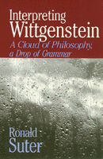

<body bgcolor="#FFFFFF" text="#000000" link="#0000FF" vlink="#CC0000" alink="#CC0000"><center><hr width="350" size="1" align="center" noshade>A highly accessible account of the thought of Wittgenstein<hr width="350" size="1" align="center" noshade><p><a href="https://cdcshoppingcart.uchicago.edu/Cart/ChicagoBook.aspx?ISBN=9780877226642&&PRESS=temple" target="_top">Buy this book!</a> | <a href="https://cdcshoppingcart.uchicago.edu/Cart/Cart.aspx?PRESS=temple" target="_top">View Cart</a> | <a href="https://cdcshoppingcart.uchicago.edu/Cart/Cart.aspx?PRESS=temple" target="_top">Check Out</a></p><p></p></center><!--none//--><h1>Interpreting Wittgenstein</h1>
<H2>A Cloud of Philosophy, a Drop of Grammar</H2>
<h3>Ronald Suter</h3>
<P>cloth 0-87722-664-4 $44.95, Jan 90, <FONT COLOR=#990033>Out of Print</FONT>
<br>paper 0-87722-904-X $24.95, Aug 91, <FONT COLOR=#990033>Out of Print</FONT>
<BR> 320 pp
</P><BLOCKQUOTE><I>"A very well written and reasoned book; a good introduction to and exposition of Wittgensteinian thinking. Suter does a fine job of showing why Wittgenstein should </I>not<I> be viewed as 'just another analytic philosophy practitioner,' without making him into some sort of mystic.... The book addresses an audience that is rarely addressed by Wittgenstein studies, and it presents interpretations that are original, interesting, and should raise good discussions among the experts."</I>
<br>&#151<b>Julius M. Moravcsik</b>, Stanford University<I></I></BLOCKQUOTE>
<p>Ludwig Wittgenstein conceived of philosophy as beneficially destructive: its purpose was to remove blocks to the understanding, to destroy "houses of cards," to eliminate philosophical muddles. Rather than providing solutions to philosophical problems&#151the mind-body problem, the problem of other minds, the problem of skepticism, the problem of universals&#151Wittgensteinian philosophy tries to show that the problems are nonsensical. This controversial philosopher has been the object of intense scrutiny&#151both professional and popular&#151and widely divergent interpretations. In this 100th anniversary of Wittgenstein�s birth, Ronald Suter offers a highly accessible account of the thought of one of the most influential Anglo-American philosophers of the twentieth century.
<p>Focusing on his mature conception of philosophy and the application of his philosophical methods to traditional and contemporary debates, Suter shows how Wittgenstein�s philosophy can be applied to many philosophical problems. He gives an account of the doctrine of family resemblance and discusses Wittgenstein�s relationship to Freud and to Russell. Contrasting Wittgenstein�s radically new view of philosophy with more traditional views, the author challenges various notions about the philosopher and shows how his approach dissolves traditional problems in theories of nature, mind, knowledge, and the philosophy of language.
<BR>&nbsp;<h2>Reviews</h2>
<p><I>"This presentation of Wittgenstein is interesting and admirably on target when defending certain interpretations against those of commentators with whom Suter disagrees. And Suter writes </I>lucidly<I>. This is not a simple achievement, and I commend him for really clear and helpful analyses of sticky, dense issues.... A fresh, original study that will be widely discussed&#151it is no mere 'introduction.'"</I>
<br>&#151<b>Gerald E. Myers</b>, Professor of Philosophy, C.U.N.Y
<BR>&nbsp;<h2>Contents</h2><P>
<p>Acknowledgments
<br>Preface
<br>List of Abbreviations
<p><b>Part I: Wittgenstein's Conception of Philosophy</b>
<br>1. Wittgenstein's Conception of Philosophy
<br>2. The Doctrine of Family Resemblance
<br>3. Wittgenstein's Freud
<p><b>Part II: Wittgenstein and Mind</b>
<br>4. Behaviorism: Logical, Philosophical, Metaphysical
<br>5. The Mind-Brain Identity Theory
<br>6 . Cartesian Dualism
<br>7. Wittgenstein's Refutation of Cartesian Dualism
<br>8. Characteristics of Criteria
<p><b>Part III: Wittgenstein on Some Problems of Philosophy</b>
<br>9. Augustine on Time
<br>10. Dissolving the Dream Argument
<br>11. Russell's Theory of Proper Names
<br>12. Saul Wittgenstein's Skeptical Paradox
<p>Appendix: Russell's Theory of Descriptions
<br>Notes
<br>Index
</P><BR>&nbsp;<H2>About the Author(s)</H2>
<P><b>Ronald Suter</b> is Professor of Philosophy at Michigan State University and the author of <I>Are You Moral?</I></P>
<BR><H2>Subject Categories</H2>
<p><A HREF="/tempress/philosophy.html" TARGET="_top">Philosophy and Ethics</a>
</p>
<p align="center"><a href="https://cdcshoppingcart.uchicago.edu/Cart/ChicagoBook.aspx?ISBN=9780877226642&&PRESS=temple" target="_top">Buy this book!</a> | <a href="https://cdcshoppingcart.uchicago.edu/Cart/Cart.aspx?PRESS=temple" target="_top">View Cart</a> | <a href="https://cdcshoppingcart.uchicago.edu/Cart/Cart.aspx?PRESS=temple" target="_top">Check Out</a></p><p><font face="Arial" size="1"><a href="copyright.html" onMouseOver="window.status='Web Copyright Policy';return true;" onMouseOut="window.status=''" title="Web Copyright Policy">&copy;</a> 2015 <a href="http://www.temple.edu" target="new" onMouseOver="window.status='Link to Temple University home page';return true;" onMouseOut="window.status=''" title="Link to Temple University home page">Temple University</a>. All Rights Reserved. http://www.temple.edu/tempress/titles/698_reg.html</font></p>